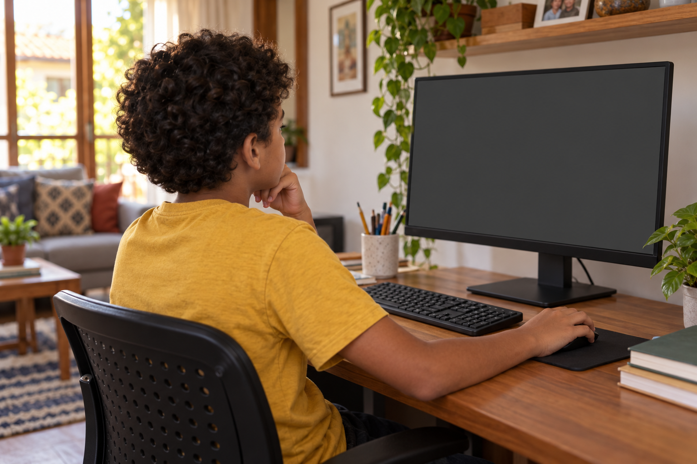

Antes de escolher
A aula é para seu filho.
Antes de contratar, descubra quanto do seu tempo ela vai pedir.
A aula é para seu filho.
Antes de contratar, descubra quanto do seu tempo ela vai pedir.
Além do horário da aula, pode haver material para separar, tarefas para acompanhar e dúvidas para resolver.
Pergunte sobre essa rotina antes de escolher.
Num curso online, uma pergunta ajuda muito:

“O que meu filho pode fazer quando tem uma dúvida?”
Peça para conhecer uma aula.
Veja se ele consegue rever a explicação, conferir uma tentativa e encontrar onde pedir ajuda.
Nas etapas que têm “Verificar esta parte”, a criança pode conferir os blocos pedidos na atividade.
O resultado ajuda a perceber o que falta ajustar.
A explicação gravada também fica disponível para rever um passo.
Ele pausa o vídeo, monta essa parte do jogo e volta quando precisar.
Ainda pode haver momentos em que ele precise de você.
Uma primeira aula acompanhada ajuda a descobrir qual apoio faz diferença.
Escolha sabendo como serão as dúvidas e o acompanhamento.
Siga @criecomhelenaejulio para entender o que observar numa atividade de criação de jogos.